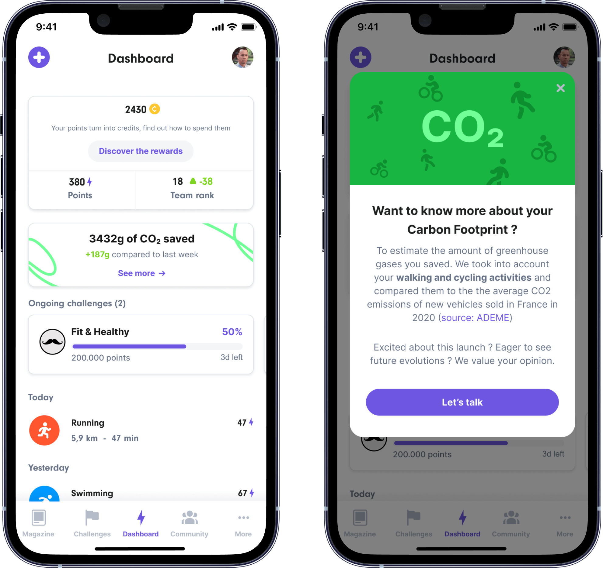
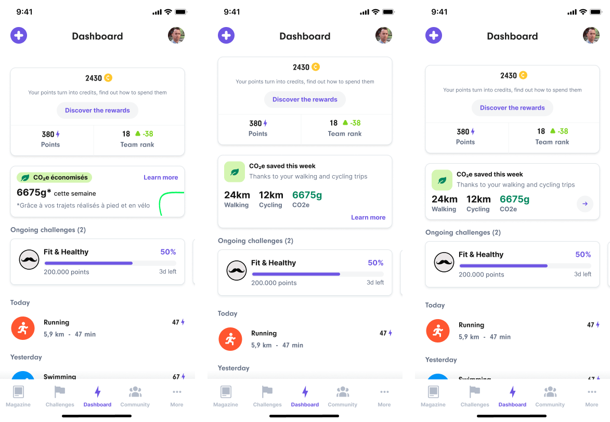
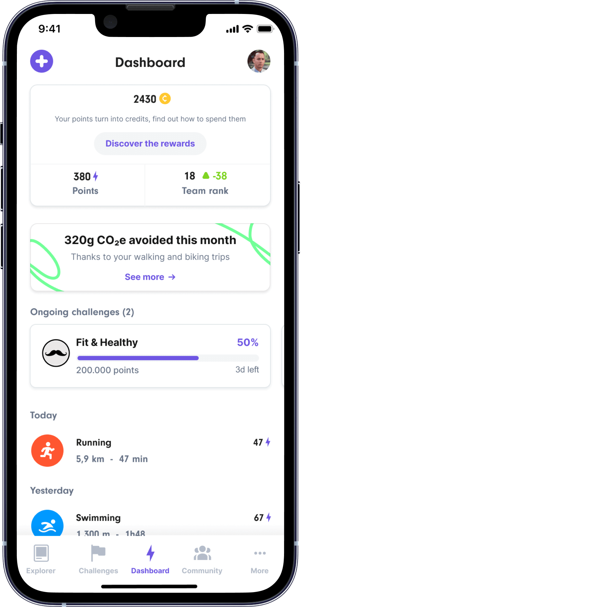

CO2 impact Highlight Dashboard
The UH users have a low 1st week retention rate, the only motivation that they have is to gain some points and go up in the leaderboard. The competition trigger does not seem to work for a good percentage of our UH user base, we need to find other motivators to increase our retention rate.
Our Hypothesis is: The Carbone Impact will be a better motivator for those who are less active and are not triggered by competition.
- Roles: Research, Visual Design, UX, UI
- Tools: Figma
- Year: 2022
- Context: Workplace
What do we want to do?
Add a card with the amount of CO2 saved during the week and the evolution compared to last week UPDATE We want to inform users about the CO2 impact they have in the way they move; for this, we will only show the amount of CO2 saved in the dashbord, but we will allow the user to click on it if he wants to know more about it (km covered, details, etc).
How is it calculated?
KM walking & cycling * 114.7g (average CO2 emissions (114.7gCO2/km) of new vehicles sold in Europe in 2020 (source : European Environment Agency)).
Every monday at 00:00 am the counter should be back to 0 UPDATE In the new version we changed it. We will calculate taking into account the whole month.
The evolution should be calculated compared to D-7 (at the same time) UPDATE We removed the comparative in the new version.
Research and design exploration
The process of developing this new feature was a little bit different from the rest of the features in which I have been involved. In this case, a lot of clients were asking to us the possibility to add a way to measure the CO2 that users were saved by active transport (walking, cycling, etc.). We also had a hypothesis in mind: the development of this new feature will motivate users to come back and track the amount of CO2 they have saved.
Since it was something we could develop quickly and we had some pressure from clients, we decided to start with an “experiment”. We decided not to do any user research, 0 tests were carried out.
However, we did a lot of research in terms of the subject itself and also about others apps that already allow users to track the amount of CO2 they save.
We decided to develop a very simple first version in which users will not be able to check further in terms of details, but where they will be able to let us know about what which type of information they would like to review. We decided to add a call to action that will open a modal that informs the user about this new feature and that includes a link to a form in which they are able to communicate with us.
This call to action will allow us to measure the interest of users about this feature. If users show strong interest in this feature, we will iterate it in order to add new possibilities to it.
Design

States

Iteration
What we found
After testing our first design, we found out multiple things that helped us to improve the current design.
We found out that the users didn't understand the origin of the CO2 saved quantity. It helped us to define the new dashboard component. We decided to remove the comparative by week. We also changed the period of time we took into account to calculate the amount of CO2 saved; we changed it from weekly to monthly. Finally, we included a little setence to help the users understand from where this quanity comes from: "Thanks to your walking and biking trips".
Below you can see some tests we did before the final design. We wanted to explore different options and formats.

However, we decided to keep it simple and we did not change much the original design. Here you can see the final version of the dashboard component:

What we added
Our original idea was to allow users to access to a page in which they will be able to check different information related to their CO2 impact.
In this first iteration, we added a dedicated page in which users are able to see the amount of kilometers they did by walking or cycling and the total amount of CO2 saved thanks to these trajects. To access to this report, users need to click on the dashboard CO2 component.
As we intended to raise awareness about the impact that we have on the planet; we wanted to provide useful information about the topic. We added some comparatives that, we think, will help users to better understand what their amount of CO2 saved means. By clicking in each card, users have access to some useful information.
Below you can see a final version of this feature:
 Here some designs we tried before the final version:
Here some designs we tried before the final version:
Learnings
During the process of designing this feature I have learned a lot of things. Since it is a complex topic, I had to do a lot of research. It wasn't easy to deliver a final version in which users are able to understand and that is able to offer some "extra value" to them.
I'm happy with the final results and I think that we were able to deliver a feature that works and helps users to be more conscious about their CO2 impact on the planet.